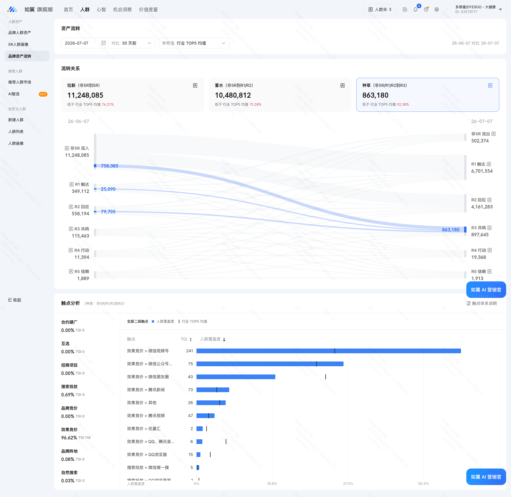
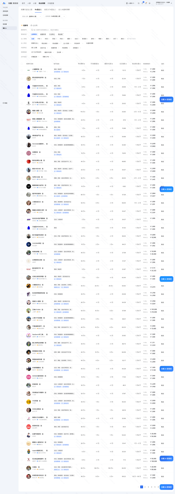
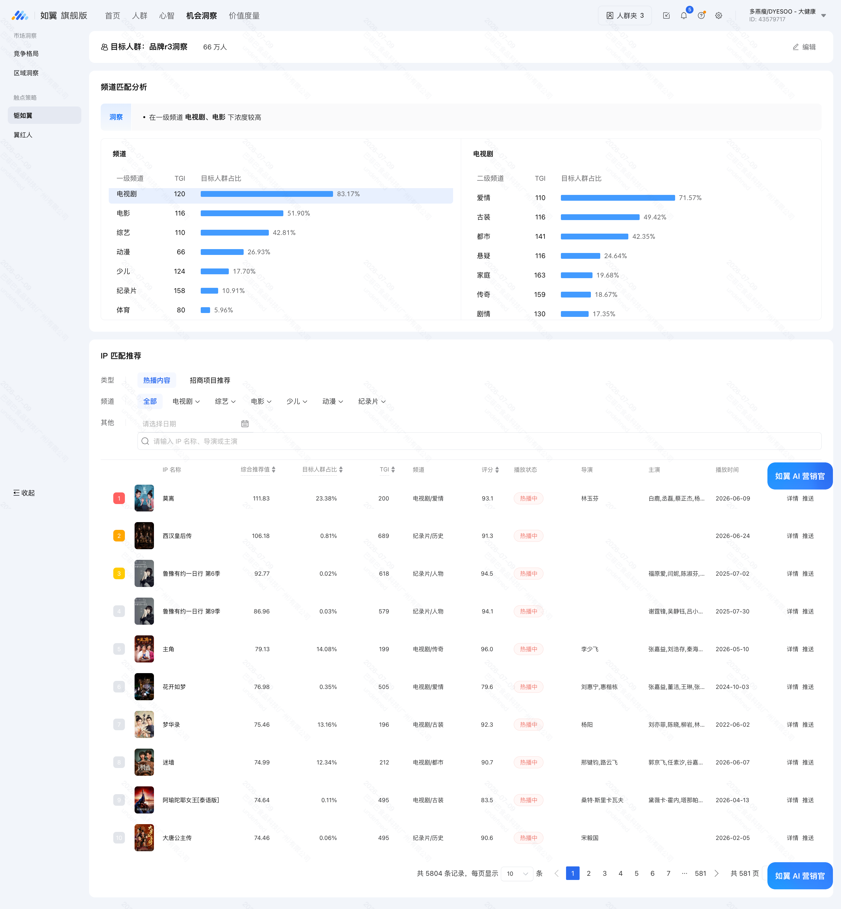

多燕瘦 × 腾讯营销
2026 H2 种草作战方案 · 从效果竞价基本盘到品牌资产第二曲线
数据周期：近 30 天（截至 2026-07-07） · 编制方：腾讯营销侧
📌 三个反差数据 · 一句话看懂多燕瘦在腾讯生态的现状
反差①：总资产 1,850 万，品类渗透率 84.04%（高于行业均值）——多燕瘦在膳食品类的用户覆盖面已经很大。
反差②：效果竞价占比 96.62%（TGI 116），而互选 = 0%、品牌竞价 = 0%、合约推广 = 0%——所有触点都压在一条腿上。
反差③：R3 共鸣层仅 89.8 万人（占总资产 4.85%），R4 行动仅 1.94 万人，R5 信赖仅 1,913人——覆盖广但深度浅，用户"知道多燕瘦"但没到"认准多燕瘦"。
核心判断：多燕瘦的第一曲线（效果竞价+视频号）已经跑通且健康，但第二曲线（互选+品牌竞价+达人种草）完全空白。Q3 的核心任务不是推翻第一曲线，而是把第二曲线从 0 搭起来。
🔬
PART 01 · 现状诊断
用如翼后台真实数据还原多燕瘦在腾讯生态的全貌
1.1 顶层大盘 · 一图看完
1,850 万总资产 · 覆盖广但深度浅
品牌总资产
1,850 万
5 层合计（近 30 天）
R3 共鸣层
89.8 万
占总资产 4.85% 🔴
如翼后台原图如翼旗舰版 › 品牌人群资产 › 品牌资产总览 + 触点分析 + 5R人群结构 · 近 30 天

📖 如何看懂这张全景图
① 顶部「品牌资产」区域——5 列数字分别是 R1-R5 各层人数，最右侧是 R5 信赖层。多燕瘦的特点是 R1/R2 很大（1178万+570万），但 R3/R4/R5 急剧收窄（89.8万→1.94万→1913）。
② 中间「触点分析」柱状图——每根柱子代表一个广告投放渠道的素材数量和目标人群浓度 TGI。效果竞价的蓝色柱几乎独占全宽，其他渠道接近为零。
③ 下方「5R人群结构」对比——蓝色=本品牌，绿色=行业 TOP5 均值。可以看到多燕瘦在多个垂类上的覆盖与行业头部有差异。
④ 重点看R3 只占总资产的 4.85%，以及效果竞价 96.62% 的绝对主导地位——这就是本方案要解决的两个核心问题。
💡 日常自查建议：每月登录如翼看一次这个页面，关注 R3 是否在增长、触点结构里互选占比是否从 0 开始有值。
5R 漏斗各层数据 · 近 30 天
| 层级 | 人数 | 占总资产 | 解读 |
|---|
| R1 触达 | 11,781,763 | 63.68% | 曝光触达层 · 已有巨大覆盖 |
| R2 回应 | 5,701,554 | 30.82% | 互动回应层 · 从触达到互动转化正常 |
| R3 共鸣 | 897,645 | 4.85% 🔴 | 品牌心智层 · 占比过低，用户未建立强认知 |
| R4 行动 | 19,368 | 0.10% | 购买行动层 · 极薄 |
| R5 信赖 | 1,913 | 0.01% | 忠诚复购层 · 几乎没有 |
| 合计 | 18,502,243 | 100% | 品类渗透率 84.04%（超均值） |
1.2 触点结构 · 一条腿走路
96.62% 效果竞价 · 第二曲线完全空白
💡 触点结构翻译一下
多燕瘦在腾讯生态的所有投放中，96.62% 走的是效果竞价——这意味着每一分钱都在"买流量卖货"，没有任何预算分配给"做品牌心智"。
这不是说效果竞价不好——效果竞价 TGI 116 说明跑得比行业平均水平好，视频号版位已经有 94 条素材在投（TGI 241 是所有细分触点里最高的）。
问题在于：只有一条腿在走。互选（唯一能带 R3 品牌资产的版位）是 0，品牌竞价是 0，合约推广也是 0。多燕瘦的用户全部来自"流量顺路看到广告后下单"，没有一个用户是因为"看了某个达人的种草视频"或"被某个 IP 内容打动"而认识多燕瘦的。
效果竞价内部 · 版位分布（共 291 条素材）
数据源：如翼旗舰版 › 触点分析 · 近 30 天
| 版位 | 素材数 | TGI | 解读 |
|---|
| 微信视频号 | 94 | 241 ⭐ | 最高效版位 · 已在用 |
| 微信公众号 | 79 | 75 | 次高效 · 公众号文章带货 |
| 腾讯新闻 | 47 | 73 | 信息流原生 |
| 微信朋友圈 | 11 | 40 | 社交场景 |
| QQ / 优量汇 / 看一看 / 浏览器 | 14 | — | 长尾补充 |
✅ 正向发现：视频号版位 TGI 241 是所有触点里最高的——说明多燕瘦在视频号的素材效率远超行业平均。Q3 启动第二曲线时，视频号就是天然主场，不需要从零学起。
1.3 30天流转能力 · 三段数据
拉新规模大 · 但种草和转化段需要补强
如翼后台原图如翼旗舰版 › 品牌人群资产 › 流转关系 · 近 30 天（桑基流转 + 触点分析）

📖 如何看懂这张流转关系图
① 顶部三个指标卡片——拉新（外部新客进来）、蓄水（变成 R1/R2）、种草（变成 R3 共鸣）。每个卡片显示绝对人数和"低于/高于行业 TOP5 均值的比例"。
② 中间桑基色带——每一条带代表一群人在 30 天内的迁移路径。色带越粗 = 这条路径上的人越多。左侧是期初状态，右侧是期末状态。
③ 右下角「触点分析」——这张图的触点分析聚焦在"种草段"（非5R/R1/R2 到 R3），可以看清楚到底是谁在帮多燕瘦完成种草。
④ 重点看：拉新 1125 万（规模大）、种草仅 86.3 万（效率低）、效果竞价 96.62% 主导种草段。
💡 日常自查建议：每月看一次"种草"数字是否在增长——如果连续 3 个月种草人数不变或下降，说明第一曲线的效果竞价边际效益在衰减，必须启动第二曲线。
拉新（非5R→5R）
1,125 万
低于 TOP5 均值 76.21% · 规模够大
蓄水（非5R→R1R2）
1,048 万
低于 TOP5 均值 75.28% · 转化为 R1R2 正常
种草（→R3）
86.3 万
低于 TOP5 均值 92.36% · 最需补强
R3→R4 转化
11,394 人
R3→R4 流转人数 · 转化率待提升
关键事实：多燕瘦 30 天拉新 1,125 万人（规模可观），但最终能沉淀为 R3 共鸣层的只有 86.3 万（仅 7.7% 的拉新转化为 R3）。这 86.3 万人里再往下走到 R4 购买的只有 11,394 人。
漏斗收口太急——从 1,125 万拉新到 1.94 万 R4，中间流失了 99.8%。第二曲线的核心价值就是在 R1→R3 和 R3→R4 两段补上"品牌信任"的转化杠杆。
1.4 核心战略课题
第一曲线强且单一 · 第二曲线完全空白
核心战略课题：
多燕瘦在腾讯生态的第一曲线（效果竞价 + 视频号）已经跑通——1,850 万总资产、84.02% 品类渗透率、96.62% 效果竞价 TGI 116、视频号 94 条素材 TGI 241。这些数字说明多燕瘦在"花钱买流量卖货"这件事上做得很好。
但多燕瘦的第二曲线（互选 + 品牌竞价 + 达人种草 + 品牌内容）完全空白——互选 0%、品牌竞价 0%、合约 0%。所有 1,850 万用户都来自"效果竞价顺路触达"，没有一个用户是因为"被某个达人的种草视频打动"或"被某个 IP 内容影响"而认识多燕瘦的。
R3 仅 89.8 万（4.85%）+ R4 仅 1.94 万 + R5 仅 1,913——这三个数字说明同一件事：用户"知道多燕瘦"但没有"认准多燕瘦"。一旦竞品出更低价的素材或者加大投放，多燕瘦的 R1/R2 池子里的用户随时可能被抢走——因为没有品牌心智护城河。
Q3 的答案不是推翻第一曲线，是把第二曲线从 0 搭起来。
双轨对照 · 第一曲线 vs 第二曲线
| 维度 | 第一曲线（现状·已跑通） | 第二曲线（Q3·从0启动） |
|---|
| 核心触点 |
效果竞价 96.62%（视频号 TGI 241） |
互选 + 品牌竞价 + 达人内容 |
| 用户记忆方式 |
"刷到广告 → 下单"（流量驱动） |
"看达人种草 → 认知品牌 → 下单"（心智驱动） |
| R3 来源 |
效果竞价顺路带（无品牌属性） |
互选/达人种草（带品牌属性） |
| R4 转化动力 |
价格/促销/货补（容易被抢） |
品牌信任 + 达人背书（有护城河） |
| 当前状态 |
✅ 健康 · TGI 116 |
🔴 完全空白 · 0% |
🚀
PART 02 · Q3 建议
用如翼工具把第二曲线从 0 搭起来
2.1 服务定位升级
从"跑投放"到"搭系统" · 陪多燕瘦建品牌资产飞轮
💡 服务定位双层结构
Q3 腾讯营销侧的服务定位分成两层：
① 上层 · 第二曲线搭建——围绕"互选启动 + 达人选号 + IP 探索 + 品牌内容"四个动作，这是 Q3 品牌资产的净增量所在；
② 下层 · 第一曲线优化——围绕现有 291 条效果竞价素材的效率优化、视频号版位进一步放大、搜索投放 ROI 提升，保规模、稳大盘。
上层第二曲线是让"知道多燕瘦"变成"认准多燕瘦"的战略动作，下层第一曲线是让已有的 1,850 万覆盖继续健康运转的战术动作——两层同时起手。
2.2 Q3 建议动作矩阵
5 个动作 · 从 0 到 1 搭第二曲线
1互选首场启动 · 从 0 到 1 P0 · 14 天见效
为什么：互选是目前如翼体系里唯一能给品牌带 R3 品牌资产的版位。多燕瘦当前互选 = 0%，意味着所有 R3 都来自效果竞价（无品牌属性）。
怎么做：
- P0 立即：从如翼 R4 高渗透达人列表（见本章 2.3）里筛选 3-5 个与多燕瘦调性匹配的腰部达人，启动首批互选合作
- 单场互选预算建议 5-15 万（视达人量级），Q3 目标做 2-3 场
- 互选内容方向：减脂/身材管理/健康生活（匹配 R3 用户画像的女性/情感/家庭向偏好）
预期效果：互选占比从 0% → 目标 3-5%（第一阶段）；R3 中来自互选的比例从 0% → 有值；产出首批可复用的种草素材。
2达人短名单 · 用翼红人反推 + R4 高渗透交叉验证 P0 · 14 天见效
为什么：客户一直在追问"哪些达人适合多燕瘦"。如翼翼红人模块可以直接回答这个问题。
怎么做：
- 第一步：用如翼「品牌 R4 高渗透达人 list」（见 2.3 章节）——这是已经对多燕瘦产生过转化行为的达人名单，是最精准的"已验证池"
- 第二步：用翼红人工具基于 68 万 R3 人群画像反推相似达人——这是破圈拓新的候选池
- 第三步：两份名单交叉 → 产出"既有转化验证又有破圈潜力"的首批合作短名单（建议 10-15 个）
- 按粉丝量级分层：头部（保 GMV）/ 腰部（补 R3） / 垂类（精准人群）
预期效果：产出一份多燕瘦专属达人合作短名单（含每个达人的 R4 渗透率/TGI/频道/评分），客户可以直接用于商务对接。
3IP 合作探索 · 用钜如翼反推节目匹配 P1 · Q3 打基础
为什么：多燕瘦 R3 人群（68 万）的内容偏好高度集中在电视剧/电影/综艺赛道（63%/52%/43%），尤其是爱情/古装/都市/家庭/传奇细分类目（TGI 110-163）。钜如翼可以基于这些偏好反推最匹配的视频号 IP 节目。
怎么做：
- 用钜如翼「品牌 5R 高渗透率节目 list」（见 2.4 章节）——如翼已自动排序出 5,804 个匹配节目
- Top 推荐优先评估：莫离（TGI200/目标人群23.38%）、主角（TGI199/14.98%）、迷墙（TGI212/12.34%）——均为电视剧/都市/古装/剧情类热播IP
- 合作形式评估：IP 冠名 / 剧集植入 / 达人联动专场 / 品牌定制短内容
预期效果：锁定 2-3 个最适合多燕瘦调性的 IP 节目进入商务评估阶段。不强制 Q3 必须签约，目标是"从知道有哪些可选到做出选择"。
4品牌号内容启动 · 视频号 + 公众号双线 P1 · Q3 打基础
为什么：R3 用户的媒体偏好 TGI 显示视频号（TGI 154 在同类品牌中偏高）+ 亲情/家庭/都市情感内容是多燕瘦用户的天然主场。品牌号内容不需要"硬核减肥科普"路线，走"女性向/情感向/生活方式"路线反而更贴合用户画像。
怎么做：
- 视频号品牌号：从 0 启动，Q3 目标周更 2-3 条（减脂日常/身材管理故事/用户蜕变案例）
- 公众号：配合视频号做深度图文，承接搜索流量（自然搜索目前仅 0.03%）
- 内容调性参考 R3 画像偏好：女性视角 > 情感叙事 > 家庭场景 > 减肥是背景不是主角
预期效果：视频号品牌号从 0 到稳定更新；公众号承接搜索流量从 0.03% 有提升；积累第一批品牌自有内容资产。
5AI 智选跑人群包 · 为大场做准备 P2 · Q3 打基础
做法：基于 68 万 R3 人群画像，用 AI 智选水晶球跑一轮"相似人群拓圈"——输出 3 个人群包，为大场投放做准备。
注意限制（事先说明）：AI 智选不支持年龄性别定向 / 不能与其他机会人群叠加 / 智能定向下看不到智选人群。
预期效果：产出 3 个可投放的人群包 + 8-10 维度洞察报告（音乐/媒体/达人/明星/长视频/新闻/推荐/共鸣），为大场前 4-6 周蓄水做准备。
2.3 达人推荐 · R4 高渗透短名单
如翼自动生成的"已转化验证"达人池
如翼后台原图如翼旗舰版 › 人群列表 › 品牌 R4 高渗透率达人 list

📖 如何看懂这张达人列表
① 这是什么表——如翼自动计算的"与多燕瘦 R4（已购买行动）人群重合度最高"的视频号达人排行。这些达人的粉丝里，有较高比例的人已经是多燕瘦的购买用户。
② 为什么重要——R4 渗透率高 = 这个达人的粉丝和多燕瘦的实际买家高度重叠。跟这类达人做互选，转化效率会远高于随机选号。
③ 怎么看每行：头像+昵名 / 粉丝数 / 目标人群占比（粉丝里有多少是多燕瘦R4用户） / TGI（与行业均值对比倍数） / 频道（达人内容类型） / 评分 / 播放状态 / 备案信息。
④ 重点看：目标人群占比和 TGI 两个数字——占比越高、TGI 越高，越适合作为首批互选合作对象。
💡 使用建议：从这份列表里按"减肥/健身/美妆/生活方式"频道筛选，取 Top 10-15 作为首批互选商务对接短名单。同时用翼红人再做一次反向验证（输入多燕瘦 brief → 反推达人），两份名单交叉后最终确定。
💡 客户追问"哪些达人适合我"的标准回答
腾讯营销侧通过如翼工具给到两份达人名单：
① R4 高渗透达人 list（本页展示）——"已经买过多燕瘦的人也在关注这些达人"
② 翼红人反推达人 list（AI 智选生成）——"和多燕瘦 R3 人群画像最相似的达人"
两份名单交叉后产出的短名单就是"既有多燕瘦买家验证又有破圈潜力"的最优解。
最终拍板权在多燕瘦品牌方——腾讯营销侧交付选号能力，不替代品牌的商务决策。
2.4 IP 节目推荐 · 钜如翼自动匹配
基于 68 万 R3 人群画像 · 自动排序 5,804 个节目
如翼后台原图如翼旗舰版 › 人群列表 › 品牌 5R 高渗透率节目 list · 总目标人群：品牌R3洞察 · 68万人

📖 如何看懂这张 IP 节目推荐表
① 顶部——总目标人群 = 68 万（多燕瘦的 R3 共鸣层用户）。钜如翼基于这 68 万人的内容偏好，反推出最匹配的视频号 IP 节目。
② 频道匹配分析——上半部分是频道级偏好（电视剧/电影/综艺/动漫/少儿/纪录片/体育），每个频道显示 TGI 和目标人群占比。多燕瘦 R3 用户最偏好的是电视剧（63.17%, TGI120）。
③ 二级频道——以电视剧为例展开的细分类目：爱情(71.57%) > 古装(49.42%) > 都市(42.35%) > 悬疑 > 家庭(19.65%, TGI163最高) > 传奇(159) > 剧情。
④ IP 匹配推荐表格——下半部分是具体节目推荐，每行包含：综合推荐值 / 目标人群占比 / TGI / 频道 / 评分 / 播放状态 / 主演/导演 / 播出时间。
⑤ 重点看 Top 行：莫离(TGI200)、主角(TGI199)、迷墙(TGI212)——这三个 IP 与多燕瘦 R3 人群的重合度最高。
💡 使用建议：这张表不是"必须合作的清单"，而是"值得评估的候选池"。建议从中筛选 2-3 个调性匹配（都市/情感/女性向）、播出时间合适（Q3 在播或即将开播）、商务条件可谈的 IP 进入深入评估。
多燕瘦 R3 人群（68 万）内容偏好画像 · 钜如翼自动分析
数据源：如翼旗舰版 › 品牌 5R 高渗透率节目 list
| 维度 | 偏好 | TGI | 目标人群占比 | Q3 内容策略含义 |
|---|
| 一级频道 | 电视剧 |
120 |
63.17% |
主战场 · IP 合作首选赛道 |
|
电影 |
116 |
51.90% |
次战场 · 影视综合作可覆盖 |
|
综艺 |
110 |
42.81% |
综艺植入/达人联动 |
|
少儿 |
124 |
17.70% |
亲子/妈妈人群 · 可拓展方向 |
|
纪录片 |
158 |
10.91% |
知识型内容 · 品牌号选题参考 |
| 二级频道（电视剧内） | ↓ 细分偏好（TGI越高=越独特） |
|
爱情 |
110 |
71.57% |
情感叙事 · 最受欢迎 |
|
都市 |
141 |
42.35% |
TGI最高 · 都市女性向 |
|
家庭 |
163 |
19.65% |
TGI第2高 · 妈妈人群 |
|
古装 |
116 |
49.42% |
古装剧植入机会 |
|
传奇 |
159 |
18.67% |
传奇/传记类内容 |
✅ R3 画像对 Q3 内容方向的指导意义：
多燕瘦 R3 用户不是"硬核减肥科技党"，而是喜欢看电视剧/电影/综艺的女性用户，尤其偏好爱情/都市/家庭/传奇类内容。这意味着：
① 品牌号内容不要走"成分党/硬核科普"路线，走"女性视角的情感叙事 + 身材管理生活方式"路线更贴合
② 互选达人优先选女性向/生活方式/情感类博主而非纯健身教练
③ IP 合作优先考虑电视剧/都市/爱情类节目植入而非硬核体育/科技节目
钜如翼 Top IP 推荐精选（前 10 · 基于综合推荐值排序）
完整列表共 5,804 条记录 · 此处展示 Top 10 供快速评估
| # | 节目名 | 综合推荐值 | 目标人群占比 | TGI | 频道 | 评分 | 状态 |
|---|
| 1 |
莫离 |
11,183 |
23.38% |
200 |
电视剧/剧情 |
93.1 |
热播中 |
| 2 |
主角 |
7,913 |
14.98% |
199 |
电视剧/剧情 |
86.0 |
热播中 |
| 3 |
迷墙 |
7,499 |
12.34% |
212 |
电视剧/都市 |
90.7 |
热播中 |
| 4 |
罗生录 |
7,546 |
13.16% |
196 |
电视剧/古装 |
92.3 |
热播中 |
| 5 |
花开如梦 |
7,688 |
0.35% |
505 |
电视剧/剧情 |
79.6 |
热播中 |
| 6 |
西汉皇后传 |
10,618 |
0.81% |
689 |
纪录片/历史 |
91.3 |
热播中 |
| 7 |
向阳花(郑女王) |
7,464 |
0.11% |
405 |
电视剧/古装 |
83.5 |
— |
| 8 |
大婚公主传 |
7,446 |
0.09% |
495 |
纪录片/历史 |
90.6 |
— |
| 9 |
像我有你一日·第9季 |
92.77 |
0.02% |
618 |
纪录片/人物 |
94.5 |
热播中 |
| 10 |
像你有你一日·第9季 |
86.98 |
0.83% |
579 |
纪录片/八物 |
94.1 |
热播中 |
筛选建议：优先评估排名 1-4（莫离/主角/迷墙/罗生录）——这 4 个 IP 的目标人群占比 >10% 且 TGI >190，与多燕瘦 R3 用户重合度最高。排名 5-10 的 IP 虽然 TGI 更高但目标人群占比偏低，可作为备选。
2.5 Q3 节奏 · 三段式飞轮
种草前置 → 加热预约 → 转化收割
Q3 三段节奏规划
| 阶段 | 时间 | 核心动作 | 对应第二曲线动作 |
|---|
前置蓄水
4-6 周 |
7 月上旬 |
如翼 AI 智选跑人群包 + 钜如翼筛 IP + 翼红人筛达人 |
动作⑤ + 动作③ + 动作② |
| 7 月中下旬 |
首批互选达人商务对接 + 品牌号内容启动 |
动作① + 动作④ |
加热预约
1-2 周 |
8 月 |
互选内容上线 + ADQ 承接预约流量 + IP 合作落地（如有） |
动作① + 动作③ |
转化收割
持续 |
8-9 月 |
大场/自播/达播集中转化 + 5 节点复盘 |
全动作协同 |
核心结论 · 多燕瘦的 Q3 飞轮
多燕瘦不需要"三支柱全部起手"的重型打法——多燕瘦 Q3 只需要做好一件事：让第二曲线从 0 变成 1。
互选从 0% 到有值、品牌号从 0 到有内容、达人短名单从无到有——这三个"从 0 到 1"就是 Q3 的全部 KPI。
体量领先的客户才打三支柱战役，多燕瘦打的是"启动战"——把飞轮转起来比把飞轮转得快更重要。